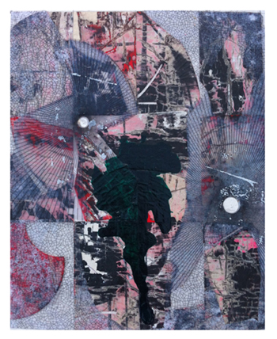

Nicolas Roggy
Thick Pink, Stuffed Light
November 13 - December 20, 2014
Opening Reception: Thursday, November 13, 6 - 8 pm
(Even now, while I write it down, this too becomes false), Kafka writes in parentheses somewhere in his diaries, rebuffing the statement he's just made. Speaking of a picture his interlocutor considers incomplete, Wittgenstein added on the same mode : (if you complete it, you falsify it). If it is true that any fulfillment congeals and that any congealment falsifies, then one can't approach truth anywhere but in the vibration of ambiguous statements, incomplete forms, unstable materials and thwarted perceptions : as thick pink, stuffed light or sudden reversals in parentheses of what has just been said, in order to never break the chains of metonymies whereby painting continues to nourish the body and the mind.
-Antoine Thirion, 2014
Martos Gallery is pleased to present a new series of paintings by artist Nicolas Roggy. The exhibition will be on view to the public November 13 through December 20, with an opening reception on Thursdsay, November 13 from 6 to 8 pm. Most recently, Roggy has exhibited his work in a solo show at Triple V, Paris and in group shows at Galerie Perrotin, Paris; Middlemarch, Brussels; Studiolo, Zurich; Moins Un, Paris and Rodolphe Janssen, Brussels. Upcoming projects include a group show at the Astrup Fearnley Museet, Oslo curated by Hans Ulrich Obrist, Thomas Boutoux and Gunnar B. Kvaran and a collaborative piece with Antoine Thiriron to be featured on the cover of The Flesh #6, 2015. This is Roggy's first solo show in the United States. He lives and works in Paris, France.
For inquiries please call 212-560-0670 or email info@martosgallery.com.
Martos Gallery
540 W 29 Street
New York, NY 10001
212-560-0670